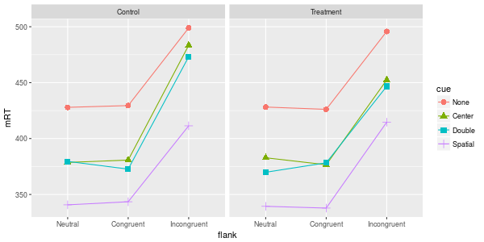
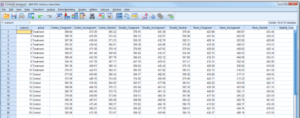
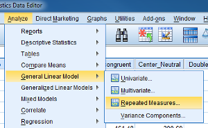
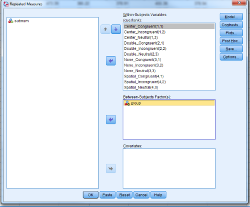
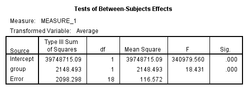

Analysis of Variance in R
Table of Contents
Background
Here are slides for the presentation part of this session.
There are three ways to perform analysis of variance (ANOVA) in R.
base::aov();car::Anova(); andez::ezANOVA().
(Note xxx::yyy() syntax means the function yyy() in package xxx; base is just base R, i.e., the function comes pre-installed with R so to use the function you don’t have to load in any packages.)
If you have balanced data, the factors are uncorrelated (e.g. due to random assignment), and none of your within-subject factors has more that 2 levels, you can use aov().
If your goal is to replicate the output from SPSS, then your best bet is to use ez::ezANOVA(), because it provides Greenhouse-Geiser correction in case you have more than three levels of a within-subject factor, and handles unbalanced data more easily.
If your goal is to learn a flexible way of analysis that can accommodate all different types of data, forget about ANOVA and learn about mixed-effects modeling. Just to get this off my chest, here are four reasons why you don’t really want to use ANOVA with psychological data:
- Doesn’t adequately handle more than one random factor at a time, and therefore, cannot properly generalize over both subjects and stimuli;
- Dealing with unbalanced data can be complicated;
- Requires that your dependent variable is continuous, and therefore is not ideal for discrete scale data or binary data;
- Difficult to deal with continuous predictors.
The ANT dataset
We will be using simulated data from the Attention Network Test (ANT) by Fan et al. (2002), which is included as part of the ez package.
?ez::ANT
ANT package:ez R Documentation
ANT data
Description:
_Simulated_ data from then Attention Network Test (see reference
below), consisting of 2 within-Ss variables (“cue” and “flank”), 1
between-Ss variable (“group”) and 2 dependent variables (response
time, “rt”, and whether an error was made, “error”)
Usage:
data(ANT)
Format:
A data frame with 5760 observations on the following 10 variables.
‘subnum’ a factor with levels ‘1’ ‘2’ ‘3’ ‘4’ ‘5’ ‘6’ ‘7’ ‘8’ ‘9’
‘10’ ‘11’ ‘12’ ‘13’ ‘14’ ‘15’ ‘16’ ‘17’ ‘18’ ‘19’ ‘20’
‘group’ a factor with levels ‘Control’ ‘Treatment’
‘block’ a numeric vector
‘trial’ a numeric vector
‘cue’ a factor with levels ‘None’ ‘Center’ ‘Double’ ‘Spatial’
‘flank’ a factor with levels ‘Neutral’ ‘Congruent’ ‘Incongruent’
‘location’ a factor with levels ‘down’ ‘up’
‘direction’ a factor with levels ‘left’ ‘right’
‘rt’ a numeric vector
‘error’ a numeric vector
Author(s):
Michael A. Lawrence <email: mike.lwrnc@gmail.com>
Visit the ‘ez’ development site at <
http://github.com/mike-lawrence/ez>
for the bug/issue tracker and the link to the mailing list.
References:
J Fan, BD McCandliss, T Sommer, A Raz, MI Posner (2002). Testing
the efficiency and independence of attentional networks. _Journal
of Cognitive Neuroscience_, *14*, 340-347.
Examples:
data(ANT)
head(ANT)
ezPrecis(ANT)
Explore the data
We need to load it in using the data() function. ez::ezPrecis() and dplyr::glimpse() give useful information about the dataset.
library("dplyr") # for exploring the data library("tidyr") # for reshaping the data library("ggplot2") # for visualizing the data library("ez") # for inferential analysis using ANOVA data(ANT) ezPrecis(ANT) glimpse(ANT) ## keep only the accurate trials ANT_acc <- filter(ANT, error == 0)
Attaching package: ‘dplyr’
The following objects are masked from ‘package:stats’:
filter, lag
The following objects are masked from ‘package:base’:
intersect, setdiff, setequal, union
Data frame dimensions: 5760 rows, 10 columns
type missing values min max
subnum factor 0 20 1 20
group factor 0 2 Control Treatment
block numeric 0 6 1 6
trial numeric 0 48 1 48
cue factor 0 4 None Spatial
flank factor 0 3 Neutral Incongruent
location factor 0 2 down up
direction factor 0 2 left right
rt numeric 0 5760 179.5972 657.6986
error numeric 0 2 0 1
Observations: 5,760
Variables: 10
$ subnum (fctr) 1, 1, 1, 1, 1, 1, 1, 1, 1, 1, 1, 1, 1, 1, 1, 1, 1, 1, 1,...
$ group (fctr) Treatment, Treatment, Treatment, Treatment, Treatment, T...
$ block (int) 1, 1, 1, 1, 1, 1, 1, 1, 1, 1, 1, 1, 1, 1, 1, 1, 1, 1, 1, ...
$ trial (int) 1, 2, 3, 4, 5, 6, 7, 8, 9, 10, 11, 12, 13, 14, 15, 16, 17...
$ cue (fctr) None, Center, Double, Spatial, None, Center, Double, Spa...
$ flank (fctr) Neutral, Neutral, Neutral, Neutral, Congruent, Congruent...
$ location (fctr) up, up, up, up, up, up, up, up, up, up, up, up, down, do...
$ direction (fctr) left, left, left, left, left, left, left, left, left, le...
$ rt (dbl) 398.6773, 389.1822, 333.2186, 419.7640, 446.4754, 338.976...
$ error (dbl) 0, 0, 0, 0, 0, 0, 0, 0, 0, 0, 0, 0, 0, 0, 0, 0, 1, 0, 0, ...
How many subjects do we have?
ANT_acc %>% count(subnum)
Source: local data frame [20 x 2] subnum n (fctr) (int) 1 1 264 2 2 255 3 3 261 4 4 258 5 5 251 6 6 259 7 7 259 8 8 265 9 9 261 10 10 264 11 11 266 12 12 260 13 13 256 14 14 237 15 15 263 16 16 264 17 17 260 18 18 259 19 19 264 20 20 265
Let’s see which factors are within and which are between.
ANT_acc %>% count(subnum, group, cue, flank) %>%
filter(subnum %in% c(1, 11)) %>%
print(n = 100)
Source: local data frame [24 x 5] Groups: subnum, group, cue [8] subnum group cue flank n (fctr) (fctr) (fctr) (fctr) (int) 1 1 Treatment None Neutral 18 2 1 Treatment None Congruent 21 3 1 Treatment None Incongruent 23 4 1 Treatment Center Neutral 22 5 1 Treatment Center Congruent 23 6 1 Treatment Center Incongruent 23 7 1 Treatment Double Neutral 24 8 1 Treatment Double Congruent 21 9 1 Treatment Double Incongruent 22 10 1 Treatment Spatial Neutral 22 11 1 Treatment Spatial Congruent 21 12 1 Treatment Spatial Incongruent 24 13 11 Control None Neutral 19 14 11 Control None Congruent 23 15 11 Control None Incongruent 23 16 11 Control Center Neutral 23 17 11 Control Center Congruent 24 18 11 Control Center Incongruent 22 19 11 Control Double Neutral 24 20 11 Control Double Congruent 23 21 11 Control Double Incongruent 19 22 11 Control Spatial Neutral 21 23 11 Control Spatial Congruent 22 24 11 Control Spatial Incongruent 23
So, we have a mixed design with one between factor (group) and two within factors (cue, flank). Both of our within-subject factors have more than two levels, so we’re going to want to correct for possible violations of sphericity (Greenhouse-Geiser). Just to make things more fun, the data are unbalanced now that we’ve thrown out trials with inaccurate responses. So if we can handle these data, we can handle anything…
Before doing any analysis, let’s look at the cell means.
ANT_means <- ANT_acc %>%
group_by(group, cue, flank) %>%
summarise(mRT = mean(rt)) %>% ungroup()
group cue flank mRT
1 Control None Neutral 427.9266
2 Control None Congruent 429.4866
3 Control None Incongruent 498.9557
4 Control Center Neutral 378.6429
5 Control Center Congruent 380.7638
6 Control Center Incongruent 483.3961
7 Control Double Neutral 379.5458
8 Control Double Congruent 372.6635
9 Control Double Incongruent 473.1597
10 Control Spatial Neutral 340.7174
11 Control Spatial Congruent 343.4821
12 Control Spatial Incongruent 411.3912
13 Treatment None Neutral 428.1812
14 Treatment None Congruent 426.1165
15 Treatment None Incongruent 495.8052
16 Treatment Center Neutral 382.8072
17 Treatment Center Congruent 376.5433
18 Treatment Center Incongruent 452.4431
19 Treatment Double Neutral 369.8689
20 Treatment Double Congruent 378.3121
21 Treatment Double Incongruent 446.6856
22 Treatment Spatial Neutral 339.3939
23 Treatment Spatial Congruent 337.8150
24 Treatment Spatial Incongruent 414.6278
Plot them…
ggplot(ANT_means, aes(flank, mRT, colour = cue)) + geom_line(aes(group = cue)) + geom_point(aes(shape = cue), size = 3) + facet_wrap(~group)

Analysis using ezANOVA()
So what might we expect from this plot? Main effects of flank and cue, maybe even a three-way interaction?
OK let’s check out the ez::ezANOVA() documentation before running our function.
?ez::ezANOVA
ezANOVA package:ez R Documentation
Compute ANOVA
Description:
This function provides easy analysis of data from factorial
experiments, including purely within-Ss designs (a.k.a. “repeated
measures”), purely between-Ss designs, and mixed
within-and-between-Ss designs, yielding ANOVA results, generalized
effect sizes and assumption checks.
Usage:
ezANOVA(
data
, dv
, wid
, within = NULL
, within_full = NULL
, within_covariates = NULL
, between = NULL
, between_covariates = NULL
, observed = NULL
, diff = NULL
, reverse_diff = FALSE
, type = 2
, white.adjust = FALSE
, detailed = FALSE
, return_aov = FALSE
)
Arguments:
data: Data frame containing the data to be analyzed.
dv: Name of the column in ‘data’ that contains the dependent
variable. Values in this column must be numeric.
wid: Name of the column in ‘data’ that contains the variable
specifying the case/Ss identifier. This should be a unique
value per case/Ss.
within: Names of columns in ‘data’ that contain predictor variables
that are manipulated (or observed) within-Ss. If a single
value, may be specified by name alone; if multiple values,
must be specified as a .() list.
within_full: Same as within, but intended to specify the full within-Ss
design in cases where the data have not already been
collapsed to means per condition specified by ‘within’ and
when ‘within’ only specifies a subset of the full design.
within_covariates: Names of columns in ‘data’ that contain predictor
variables that are manipulated (or observed) within-Ss and
are to serve as covariates in the analysis. If a single
value, may be specified by name alone; if multiple values,
must be specified as a .() list.
between: Names of columns in ‘data’ that contain predictor variables
that are manipulated (or observed) between-Ss. If a single
value, may be specified by name alone; if multiple values,
must be specified as a .() list.
between_covariates: Names of columns in ‘data’ that contain predictor
variables that are manipulated (or observed) between-Ss and
are to serve as covariates in the analysis. If a single
value, may be specified by name alone; if multiple values,
must be specified as a .() list.
observed: Names of columns in ‘data’ that are already specified in
either ‘within’ or ‘between’ that contain predictor variables
that are observed variables (i.e. not manipulated). If a
single value, may be specified by name alone; if multiple
values, must be specified as a .() list. The presence of
observed variables affects the computation of the generalized
eta-squared measure of effect size reported by ‘ezANOVA’.
diff: Names of any variables to collapse to a difference score. If
a single value, may be specified by name alone; if multiple
values, must be specified as a .() list. All supplied
variables must be factors, ideally with only two levels
(especially if setting the ‘reverse_diff’ argument to TRUE).
reverse_diff: Logical. If TRUE, triggers reversal of the difference
collapse requested by ‘diff’. Take care with variables with
more than 2 levels.
type: Numeric value (either ‘1’, ‘2’ or ‘3’) specifying the Sums of
Squares “type” to employ when data are unbalanced (eg. when
group sizes differ). ‘type = 2’ is the default because this
will yield identical ANOVA results as ‘type = 1’ when data
are balanced but ‘type = 2’ will additionally yield various
assumption tests where appropriate. When data are unbalanced,
users are warned that they should give special consideration
to the value of ‘type’. ‘type=3’ will emulate the approach
taken by popular commercial statistics packages like SAS and
SPSS, but users are warned that this approach is not without
criticism.
white.adjust: Only affects behaviour if the design contains only
between-Ss predictor variables. If not FALSE, the value is
passed as the white.adjust argument to ‘Anova’, which
provides heteroscedasticity correction. See ‘Anova’ for
details on possible values.
detailed: Logical. If TRUE, returns extra information (sums of squares
columns, intercept row, etc.) in the ANOVA table.
return_aov: Logical. If TRUE, computes and returns an aov object
corresponding to the requested ANOVA (useful for computing
post-hoc contrasts).
Details:
ANCOVA is implemented by first regressing the DV against each
covariate (after collapsing the data to the means of that
covariate's levels per subject) and subtracting from the raw data
the fitted values from this regression (then adding back the mean
to maintain scale). These regressions are computed across Ss in
the case of between-Ss covariates and computed within each Ss in
the case of within-Ss covariates.
Value:
A list containing one or more of the following components:
ANOVA: A data frame containing the ANOVA results.
Mauchly's Test for Sphericity: If any within-Ss variables with >2
levels are present, a data frame containing the results of
Mauchly's test for Sphericity. Only reported for effects >2
levels because sphericity necessarily holds for effects with
only 2 levels.
Sphericity Corrections: If any within-Ss variables are present, a data
frame containing the Greenhouse-Geisser and Huynh-Feldt
epsilon values, and corresponding corrected p-values.
Levene's Test for Homogeneity: If the design is purely between-Ss, a
data frame containing the results of Levene's test for
Homogeneity of variance. Note that Huynh-Feldt corrected
p-values where the Huynh-Feldt epsilon >1 will use 1 as the
correction epsilon.
aov: An aov object corresponding to the requested ANOVA.
Some column names in the output data frames are abbreviated to
conserve space:
DFn Degrees of Freedom in the numerator (a.k.a. DFeffect).
DFd Degrees of Freedom in the denominator (a.k.a. DFerror).
SSn Sum of Squares in the numerator (a.k.a. SSeffect).
SSd Sum of Squares in the denominator (a.k.a. SSerror).
F F-value.
p p-value (probability of the data given the null hypothesis).
p<.05 Highlights p-values less than the traditional alpha level of .05.
ges Generalized Eta-Squared measure of effect size (see in references below: Bakeman, 2005).
GGe Greenhouse-Geisser epsilon.
p[GGe] p-value after correction using Greenhouse-Geisser epsilon.
p[GGe]<.05 Highlights p-values (after correction using Greenhouse-Geisser epsilon) less than the traditional alpha level of .05.
HFe Huynh-Feldt epsilon.
p[HFe] p-value after correction using Huynh-Feldt epsilon.
p[HFe]<.05 Highlights p-values (after correction using Huynh-Feldt epsilon) less than the traditional alpha level of .05.
W Mauchly's W statistic
Warning:
Prior to running (though after obtaining running ANCOVA
regressions as described in the ‘details’ section), ‘dv’ is
collapsed to a mean for each cell defined by the combination of
‘wid’ and any variables supplied to ‘within’ and/or ‘between’
and/or ‘diff’. Users are warned that while convenient when used
properly, this automatic collapsing can lead to inconsistencies if
the pre-collapsed data are unbalanced (with respect to cells in
the full design) and only the partial design is supplied to
‘ezANOVA’. When this is the case, use ‘within_full’ to specify the
full design to ensure proper automatic collapsing.
Author(s):
Michael A. Lawrence <email: mike.lwrnc@gmail.com>
Visit the ‘ez’ development site at <
http://github.com/mike-lawrence/ez>
for the bug/issue tracker and the link to the mailing list.
Note that we should be using Type III ss if we want to replicate SPSS output.
(Note that this is using RM-ANOVA and not mixed-model ANOVA; in the latter case you would have different error terms for the different effects.)
rt_anova <- ezANOVA(ANT_acc, rt, subnum, within = .(cue, flank),
between = group, type = 3)
print(rt_anova)
Warning: Collapsing data to cell means. *IF* the requested effects are a subset of the full design, you must use the "within_full" argument, else results may be inaccurate.
$ANOVA
Effect DFn DFd F p p<.05 ges
2 group 1 18 18.430592 4.377562e-04 * 0.07633358
3 cue 3 54 516.605213 1.005518e-39 * 0.89662286
5 flank 2 36 1350.598810 1.386546e-34 * 0.92710583
4 group:cue 3 54 2.553236 6.497492e-02 0.04110445
6 group:flank 2 36 8.768499 7.900829e-04 * 0.07627434
7 cue:flank 6 108 5.193357 9.938494e-05 * 0.11436699
8 group:cue:flank 6 108 6.377225 9.012515e-06 * 0.13686958
$`Mauchly's Test for Sphericity`
Effect W p p<.05
3 cue 0.7828347 0.5366835
4 group:cue 0.7828347 0.5366835
5 flank 0.8812738 0.3415406
6 group:flank 0.8812738 0.3415406
7 cue:flank 0.1737053 0.1254796
8 group:cue:flank 0.1737053 0.1254796
$`Sphericity Corrections`
Effect GGe p[GG] p[GG]<.05 HFe p[HF]
3 cue 0.8652559 1.115029e-34 * 1.0239520 1.005518e-39
4 group:cue 0.8652559 7.472046e-02 1.0239520 6.497492e-02
5 flank 0.8938738 3.763312e-31 * 0.9858964 3.964046e-34
6 group:flank 0.8938738 1.297752e-03 * 0.9858964 8.438369e-04
7 cue:flank 0.6022111 1.546166e-03 * 0.7721473 4.745714e-04
8 group:cue:flank 0.6022111 3.424499e-04 * 0.7721473 7.170939e-05
p[HF]<.05
3 *
4
5 *
6 *
7 *
8 *
Compare to SPSS output
First we have to reshape the data from long to wide. Better to do this in R using tidyr::spread() than to try to do this in SPSS!
ANT_agg <- ANT_acc %>% group_by(subnum, group, cue, flank) %>% summarise(RT = mean(rt)) %>% ungroup() for_spss <- ANT_agg %>% mutate(cond = paste(cue, flank, sep = "_")) %>% select(subnum, group, cond, RT) %>% spread(cond, RT) write.csv(for_spss, "for_spss.csv", row.names = FALSE) glimpse(for_spss)
Observations: 20 Variables: 14 $ subnum (fctr) 1, 2, 3, 4, 5, 6, 7, 8, 9, 10, 11, 12, 13, 14,... $ group (fctr) Treatment, Treatment, Treatment, Treatment, Tr... $ Center_Congruent (dbl) 368.6432, 389.7828, 367.9923, 383.2157, 394.601... $ Center_Incongruent (dbl) 473.3917, 455.6889, 436.5402, 438.4868, 471.384... $ Center_Neutral (dbl) 385.2220, 374.2402, 371.2286, 384.8149, 378.096... $ Double_Congruent (dbl) 378.9103, 384.1513, 356.3303, 399.3815, 370.688... $ Double_Incongruent (dbl) 455.3791, 432.9680, 432.6974, 445.8616, 447.052... $ Double_Neutral (dbl) 378.9357, 356.9811, 392.3132, 370.2583, 370.638... $ None_Congruent (dbl) 423.8810, 441.9487, 428.1394, 433.2586, 436.916... $ None_Incongruent (dbl) 490.8676, 483.2877, 503.2587, 498.5326, 499.016... $ None_Neutral (dbl) 433.4563, 436.4319, 428.6568, 415.5254, 429.138... $ Spatial_Congruent (dbl) 350.1803, 337.6057, 334.5602, 342.8093, 329.854... $ Spatial_Incongruent (dbl) 407.1928, 421.0479, 431.4388, 407.0074, 418.313... $ Spatial_Neutral (dbl) 328.0655, 339.3997, 331.3369, 320.7324, 332.479...
Here is how the data look:

And then we choose Repeated Measures from the analysis menu:

Define our within IVs:

Results:



Mixed-effects analysis
library("afex") ## see ?afex::mixed ## NB: random-intercept-only model justified here because of ## pre-aggregation of the data mod <- mixed(RT ~ group * cue * flank + (1 | subnum), ANT_agg, type = 3) print(mod)
Loading required package: car
Loading required package: lme4
Loading required package: Matrix
Attaching package: ‘Matrix’
The following object is masked from ‘package:tidyr’:
expand
Loading required package: reshape2
************
Welcome to afex. Important notes:
Due to popular demand, afex doesn't change the contrasts globally anymore.
To set contrasts globally to contr.sum run set_sum_contrasts().
To set contrasts globally to the default (treatment) contrasts run set_default_contrasts().
All afex functions are unaffected by global contrasts and use contr.sum as long as check.contr = TRUE (which is the default).
************
Fitting 8 (g)lmer() models:
[........]
Obtaining 7 p-values:
[.......]
Effect F ndf ddf F.scaling p.value
1 group 0.01 1 216.00 1.00 .94
2 cue 107.14 3 198.00 1.00 <.0001
3 flank 135.42 2 198.00 1.00 <.0001
4 group:cue 1.37 3 198.00 1.00 .25
5 group:flank 0.09 2 198.00 1.00 .92
6 cue:flank 9.40 6 198.00 1.00 <.0001
7 group:cue:flank 5.71 6 198.00 1.00 <.0001